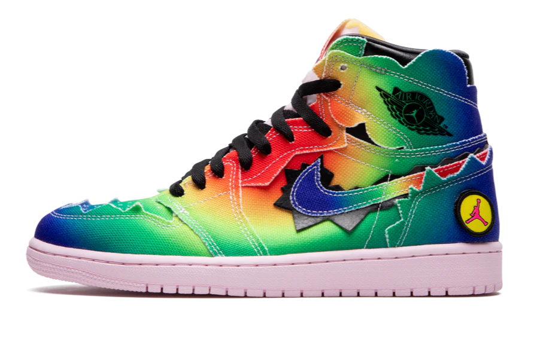

jordan 1 de jbalvin
historia de el par
J Balvin le contó a Jordan su historia
de cuando llegó a Oklahoma como estudiante
de intercambio de secundaria, mejorando su
inglés y posteriormente llegando a conectar
con sus primos en Nueva York, teniendo así
su primer contacto con la cultura estadounidense
precio
10,600

procesos de compra
pago con tarjeta
pago con efectivo